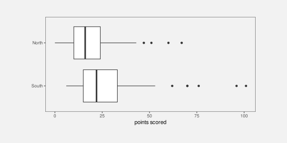
8 Encoding Summaries
In Chapter 3 we described a data visualisation as a encoding that encodes data values as the visual features of a data symbol (Figure 3.2). For example, a bar plot, like Figure 3.1, encodes the total number of youth offenders to the lengths of bars.
We also emphasised the importance of the decoding from visual features to data values. For example, the effectiveness of the bar plot in Figure 3.1 relies on our ability to accurately decode the lengths of the bars, particularly relative to each other.
In the simple scenario of a bar plot, the data values are counts (Table 3.1), which are encoded as the lengths of bars, which in turn allows us to decode lengths to retrieve the counts (Figure 3.6). Each raw data value (count) is encoded to the length of a bar.
In this chapter, we explore some data visualisations that are effective because they encode data summaries instead of raw data values.1
8.1 Box plots
Figure 8.1 shows box plots of the number of points scored by Tier One nations at Rugby World Cup matches (Table 4.1), with a separate box plot for teams from different hemispheres.2 This is an effective data visualisation for comparing the distributions of points scored between hemispheres because we are able to easily see differences between the median values of the countries (the thick vertical lines) and differences between the interquartile ranges of the countries (the horizontal rectangles). For example, we can see that the median points scored by southern hemisphere teams is larger than the median for northern hemisphere teams and the interquartile range of points scored is also wider for southern hemisphere teams.
Box plots are quite different from bar plots and dot plots because the data symbol is a much more complicated shape: there is a vertical line to represent the median, a rectangle to represent the interquartile range (lower quartile to upper quartile), and horizontal lines to represent the extremes of the data values, from the the quartiles to the minimum and maximum values. Points are also included for “outliers” if data values lie further than 1.5 times the interquartile range beyond the quartiles.
Another important difference with a box plot is that it encodes data summaries, rather than raw data values, to visual features of the data symbol (Figure 8.2). For example, the median values are encoded to the horizontal positions of thick vertical lines and the interquartile ranges are encoded to the lengths of horizontal rectangles.
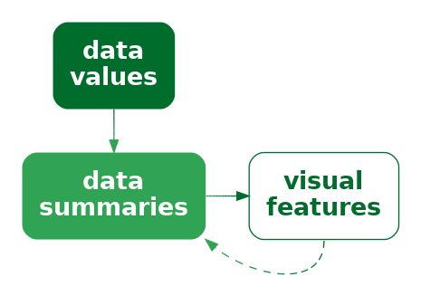
To be explicit, the data values that are being encoded as visual features in Figure 8.1 are not the raw data values in Table 4.1; the values that are being encoded to visual features in Figure 8.1 are the data summaries shown in Table 8.1. The data summaries in Table 8.1 are the values that we can decode from the boxplots in Figure 8.1.3
| minimum | lower quartile | median | upper quartile | maximum | |
|---|---|---|---|---|---|
| South | 6 | 15 | 22 | 33 | 101 |
| North | 0 | 10 | 16 | 24 | 67 |
Figure 8.1 is effective for allowing us to compare summaries like the medians between different hemispheres because, although the box plot data symbol is relatively complicated, a box plot still just encodes the data summaries to simple visual features. We know from Chapter 3 that position and length are effective for decoding the data summaries from the visual features (Figure 8.2).
Notice how, even though Table 8.1 contains very few values, it is much easier to perceive the differences between the two rows of values using the data visualisation in Figure 8.1 rather than the table of values in Table 8.1. Once again, we can see the power of encoding values to basic visual features. The only differences from previous sections is that we are encoding data summaries rather than raw data values and we are encoding to the visual features of a more complicated data symbol.
A box plot is effective at conveying information about the distribution of data values because it encodes data summaries about the distribution, like the median and interquartile range, to basic visual features.
8.2 Visual summaries
Figure 8.3 shows a dot plot of the number of points scored by countries from the different hemispheres in Rugby World Cup matches.4 This data visualisation uses the same data as Figure 8.1, but it encodes raw data values rather than data summaries and it uses much simpler data symbols (data points). This data visualisation encodes the number of points scored encodes as the horizontal position of a data point and it encodes the hemisphere as the vertical position of a data point. There is an overplotting problem (Section 4.4), which is solved in this case by offsetting data symbols vertically for repeated data values.
Because this data visualisation encodes raw data values as visual features, it is possible to decode raw data values from the visual features (Figure 3.6). For example, it is possible to see that the lowest score (zero points) for a northern hemisphere team ocurred twice. It is also possible to see that there are scores that have never occurred in any matches: 1, 2, 4, and 5. These features are not visible in the boxplots in Figure 8.1.
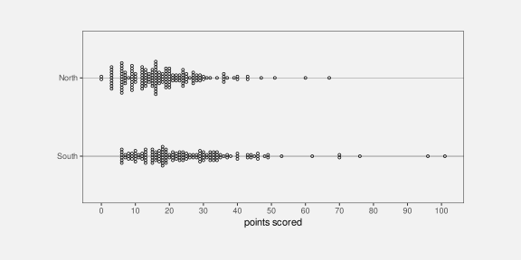
The fact that we can decode raw data values from a dot plot is not news. That is easy because we have encoded raw data values as accurate visual features (see Section 3.7). However, Figure 8.3 also demonstrates that, in addition to decoding raw data values from visual features, our visual system allows us to decode data summaries from visual features.
For example, we can see that the southern hemisphere teams score slightly more points on average than the northern hemisphere teams; the data symbols for southern-hemisphere teams appear shifted to the right of the data symbols for northern-hemisphere teams. In other words, we can perceive visual summaries; we can perceive data summaries from collections of visual features. For example, we can visually average the positions of the data points.5
In Figure 8.3, we have encoded raw data values as visual features, which has enabled us to decode raw data values from individual visual features. In addition, visual summaries of the visual features enable us to decode data summaries from collections of visual features (Figure 8.4).
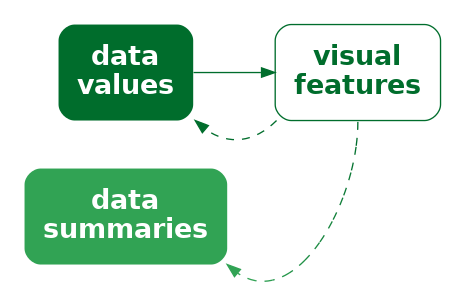
A dot plot is effective not just for perceiving raw data values, but also for perceving data summaries like clusters and outliers, and central tendency and spread.
8.3 Case study: Histograms
Figure 8.5 shows a histogram of the number of points scored by Tier One nations at the Rugby World Cups (Table 4.1). A histogram is similar to a box plot in two ways: a histogram is a data visualisation that can be used to convey the distribution of a variable; and a histogram is a data visualisation that encodes data summaries, rather than raw values, to visual features (Figure 8.2).
However, a histogram differs from a box plot in two main ways: the data symbol for a histogram is simpler than a box plot, because it consists of just rectangles or bars; and the data summaries for a histogram are more complicated than those for a box plot.
The raw data values for the histogram in Figure 8.5 are the points scored in each game by each country (Table 4.1). To get the data summaries for the histogram, the raw data values are binned; we break the range of the data into equal-sized intervals and count how many data values lie in each interval. The centre of each interval is then encoded as the horizontal position of a bar and the count of data values in each interval is encoded as the length of a bar.

To be explicit, the values that are being encoded to visual features in Figure 8.5 are not raw data values, but data summaries—intervals and counts—as shown in Table 8.2.6
| interval | 0-5 | 5-10 | 10-15 | 15-20 | 20-25 | 25-30 | 30-35 | 35-40 | 40-45 | 45-50 | 50-55 | 55-60 | 60-65 |
| count | 11 | 51 | 44 | 63 | 38 | 29 | 19 | 15 | 7 | 7 | 2 | 1 | 1 |
As with a box plot, encoding data summaries as accurate visual features, in this case position and length, means that we can easily decode data summaries from the visual features. For a histogram, this means that we can easily compare the lengths of the bars, which means we can easily compare the counts of data values within each interval. For example, the longest bars represent the intervals that contain a relatively large count of data values, which tells us about the mode of the data (or the number of modes in the data). In Figure 8.5 we can see that the largest number of data values occur around 15 to 20 points and we can see that the number of data values in each interval drops more rapidly above the highest bar than below the highest bar. The latter tells us about the spread and/or skewness of the data.
A histogram is effective at conveying information about the distribution of data values because it encodes data summaries to basic visual features and those data summaries can be compared to provide information about the distribution of the data.
8.4 Decoding summaries
When we encode a data summary as a visual feature, like the position of the median line of a boxplot (Figure 8.1), we know from previous chapters how effective the decoding is going to be. For example, because the median is encoded as position, we should be able to decode the median very accurately (Section 3.5).
However, if we rely on a visual summary to decode a data summary, for example, comparing the average points scored by teams from different hemispheres based on a collection of data points for each hemisphere (Figure 8.3), we are no longer dealing with just the decoding of a single visual feature. How well can we decode the average from the positions of several data symbols compared to decoding a single data value from a single data symbol? How effective is the decoding from visual features to a data summary (Figure 8.4)?
One issue that arises is that there are many possible visual summaries. For example, we might be interested in the average data value, or the variability of data values, whether there are unusual data values (outliers), or whether there are groups of data values (clusters).7
Furthermore, we can produce each sort of visual summary for each possible visual feature. For example, we can decode the average position of data symbols, or the average luminance of data symbols, or the average area of data symbols. We can decode unusual positions, unusual colours, or unusual angles.
Although it is well-established that our visual system is capable of generating visual summaries, less is known about the accuracy of those summaries, partly because the range of possible visual summaries is so large. However, there are a few well-established results. For example, we know that estimating averages from the positions of multiple data symbols is quite accurate, as in Figure 8.3. We also know that estimating averages from the luminance and/or chroma of multiple data symbols can also be effective.8
For more qualitative summaries, such as identifying clusters and outliers, we know that performance will be good because these decodings rely on fundamental properties of our visual system that identify unusual items (Section 2.5) and identify groups of items (Section 2.7).
8.5 Dangers of summaries
The benefit of a data visualisation that encodes data summaries as visual features is that it allows us to decode data summaries very easily. For example, although we can perceive a general idea of central tendency from the dots in Figure 8.3 (see Section 8.2), it is much easier and more accurate to perceive median values from the thick vertical lines in Figure 8.1.
The flipside is that a data visualisation that encodes data summaries as visual features is not effective for decoding raw data values. For example, we cannot see from the box plot in Figure 8.1 that the scores 1, 2, 4, and 5 never occurred, while this is clear from Figure 8.3 because the dot plot does encode the raw data values to data symbols.
Box plots and histograms are not effective at conveying raw data values because they do not encode raw data values to data symbols.
Another point to consider with a data visualisation that is based on data summaries is whether the data summaries provide reasonable summaries of the data.9 For example, Figure 8.6 shows box plots of the number of points conceded by each team in Rugby World Cup games. The box plot for southern hemisphere teams suggests a unimodal distribution with a slight right skew.
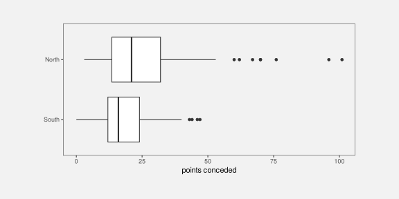
However, the dot plots in Figure 8.7 tell a different story. This data visualisation shows some evidence that the number of points conceded by southern-hemisphere teams may be bimodal, with some teams only conceding very few points (0, 3, or 6) in a number of games. The data summaries for a box plot assume a unimodal distribution, so a box plot will only ever tell a unimodal story, and that is only reasonable if the data are unimodal.
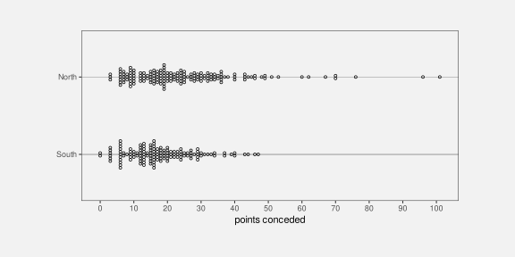
A data visualisation that is based on data summaries can only be effective if the data summaries are sensible summaries of the data.
A box plot is not effective if a five-number summary is not a sensible summary of the data values.
A further complication arises with histograms because we have to choose the intervals that are used to calculate the data summaries and that choice can have a large influence on the data summaries. For example, Figure 8.8 shows a histogram of the same data that we used for Figure 8.5, but with a greater number of narrower intervals. This visualisation tells a slightly different story than Figure 8.5. The most common score is now 6 points (rather than between 15 and 20 points) and we see features like gaps at 1, 2, 4, and 5 points and a stronger suggestion of bimodality. There are also point totals that appear strangely low, like 11 and 14.
Unlike a box plot, where the data summaries are essentially fixed calculations,10 for a histogram we get to choose the data summaries to some extent, which means that we get to choose the story that the data visualisation tells. Figure 8.5 tells a simpler story, but Figure 8.8 tells a story that includes some important details.
When using a histogram for exploring a data set, it is a good idea to try out more than one choice of intervals in order to avoid missing an important story. When using a histogram to present a story about a data set, there is a responsibility to present a story that does not exclude important details.

8.6 Case study: How charts lie
In this book, we assume that the purpose of a data visualisation is to faithfully and honestly encode data values and the goal is to produce a data visualisation that provides the most effective decoding. Nevertheless, even less honest representations of data can also be thought of in terms of encodings, particularly encodings of data summaries.
For example, Figure 8.9 shows a bar plot of the predicted impact on the top tax rate in the United States from President George W. Bush to President Barack Obama.11 One problem with this data visualisation is that it does not encode raw data values—the actual predicted top tax rates are 35 and 39.6. Instead, a “data summary” of the tax rate minus 34 (the values 1 and 5.6) are encoded as the lengths of the two bars. We are unable to decode the raw data from this bar plot—we can only decode the data values that have been encoded—and this leads to an extreme exaggeration of the difference between the two top tax rates.

A data visualisation that encodes a data summary that is a distortion of the data or an inappropriate subset of the data is encoding unhelpful information to visual features. It is only then possible to decode unhelpful information from the data visualisation (Figure 8.10).
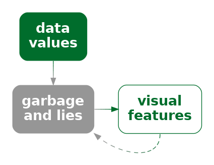
8.7 Visual downgrades
We have seen that a downside to encoding data summaries, rather than raw data values, is that we lose the ability to decode raw data values from data symbols. However, we pay this price in order to improve our ability to decode data summaries from the data symbols. For example, a boxplot makes it easier to decode the median of a set of data values.
By encoding data summaries, we deliberately lose the ability to decode raw data values in order to gain the ability to decode data summaries.
Another way that we may deliberately lose information is by selecting a visual feature that does not allow complete decoding of the original data values.
For example, Figure 8.11 shows the crime rate for 2021 in each police district of New Zealand. The data values for this map are shown in Table 8.3.
| district | rate |
|---|---|
| Northland | 372.63 |
| Waitematā | 171.37 |
| Auckland City | 191.53 |
| Counties/Manukau | 191.43 |
| Waikato | 282.42 |
| Bay of Plenty | 411.96 |
| Eastern | 355.56 |
| Central | 393.59 |
| Wellington | 217.47 |
| Tasman | 390.83 |
| Canterbury | 190.70 |
| Southern | 312.89 |
The data symbols in Figure 8.11 are circles with the geographic location of the (centre of the) police district encoded to the position of the circles and the crime rate encoded to the (fill) colour, particularly the luminance, of the circles. Darker circles represent higher crime rates.
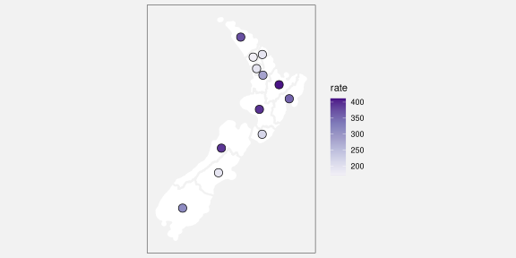
We know that encoding the crime rate as luminance is not an appropriate encoding for quantitative data values (Section 3.3). The best we can decode is ordinal data values from the luminance of the circles (Section 3.4).
However, we may accept this loss of information in order to gain the ability to decode the geographic position of the police districts. For example, although we cannot decode exact crime rates, we are able to see that the higher crime rates correspond to more rural areas; the lighter circles appear in the urban regions that include New Zealand’s largest cities: Auckland, Wellington, and Christchurch.
In Figure 8.11, we can only decode to data summaries of the crime rate because we an only decode the ranking of the crime rates, not individual numeric crime rates and not numeric differences between crime rates (Figure 8.12).
On the other hand, this loss of information is acceptable if the decoding still allows us to make useful comparisons. Put more strongly, the numeric comparisons that we lose access to may not be the most important decodings, so the loss may not be that important.12
For comparison, Figure 8.13 shows a simple bar plot of the same crime rates. In this data visualisation, although we can decode and compare the numeric crime rates much more accurately, the rural/urban comparison is much more difficult.
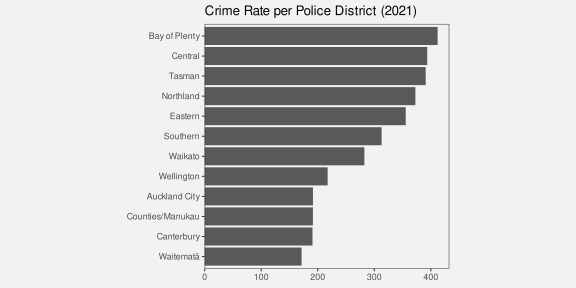
8.8 Case study: Heatmaps
Heatmaps are a common way of representing three-dimensional data where two of the data variables are either qualitative or have been measured on a regular grid and the third variable is quantitative. The first two variables naturally encode to horizontal and vertical position to produce an array of rectangles, while the third variable encodes to colour.
We saw an example of a heatmap in Figure 1.2 and Figure 8.14 shows another example that is a variation on Figure 6.22 and Figure 6.24.
The use of colour to encode quantitative data values is not optimal for accuracy (Section 3.3). However, as we saw in Section 8.7, as long as the colour scheme has monotonic luminance and/or chroma changes, it is still possible to decode ordinal values.
Furthermore, we are able to decode useful visual summaries from the multiple rectangle data symbols on a heatmap (Section 8.2). For example, we can identify regions of darker or lighter colours, not just individual dark or light rectangles.13
On the downside, because each rectangle in a heatmap is surrounded by other rectangles of differing colours, it is difficult to accurately decode the colours of individual rectangles (Section 6.3).
In the case of a heatmap, ordinal comparisons are typically what is of most importance. The aim is not to be able to decode individual quantitative data values and this moderates the damage that is done by relative perception of the heatmap rectangles.
8.9 Cognitive load
Consider the following sentence about changes in global malnutrition rates:14
“rising food production reduced the malnutrition rate from 2 in 3 people in 1950 to 1 in 11 by 2019”
In order to comprehend the change in malnutrition rate, we are required to compare “2 in 3” to “1 in 11”. This requires mental effort to calculate the ratios or fractions and then compare them. It is possibly easier to compare the rates if we hold the numerator constant, comparing “2 in 3” to “2 in 22”. It is perhaps easier still if we calculate the fractions, comparing 0.667 to 0.091. However, it is certainly easier to compare those fractions visually (Figure 8.15).
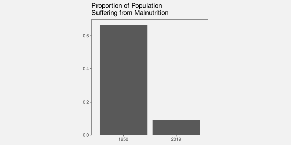
The point is that we can reduce the cognitive load that is required of the viewer if we make the mental calculations that are required easier. We can reduce the cognitive load further if we present the results of the calculation directly and even further if we encode the results of the calculation as simple visual features.
In other words, we can calculate data summaries or we can force the viewer to perform visual summaries.
Conversely, we can add to the cognitive load if we make the visual calculations harder. For example, Figure 8.16 shows a bar plot of the original “2 in 3” versus “1 in 11” data values. We now need to perceive the proportion of blue bars relative to red bars and compare those proportions, which is clearly more work than just comparing the two bars in Figure 8.15.
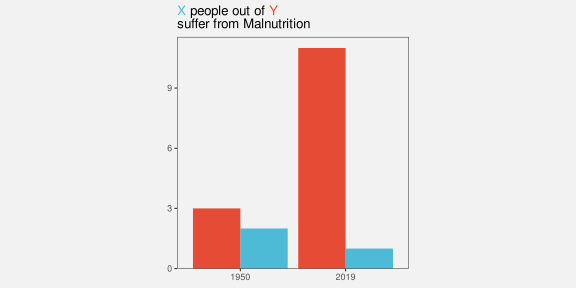
We ideally want to present data in a way that imposes the least cognitive load on the viewer. In terms of Section 2.9, we want to present the viewer with simple visual tasks.15
The best data visualisation will be different for different questions of interest, but if the question of interest involves comparing data summaries, then one way that we can make the viewer’s life easier is by calculating summaries of the data and encoding data summaries as visual features, rather than encoding raw data values and asking the viewer to perform visual summaries.
It is possible in some cases to rely on visual summaries, but we need to be careful not to set a visual task that requires too much mental effort.
8.10 Case study: Visualising uncertainty
The dot plot in Figure 8.3 shows the number of points scored by countries from the different hemispheres in Rugby World Cup matches. This allows us to decode the number of points scored in individual matches and it allows us to decode visual summaries of points scored in multiple matches (Section 8.2). For example, we can see that the range of scores is higher for southern-hemisphere teams. We can also estimate the spread of scores for northern versus southern hemisphere teams, for example, what is the interquartile range? However, comparing the spreads of scores is a more difficult visual task than comparing the ranges of scores.
This is an example of a situation where we can reduce the cognitive load by presenting the data summary directly rather than relying on a visual summary. For example, Figure 8.1 allows us to compare the interquartile ranges more easily because a boxplot encodes that information directly as the length of a box.
TODO express the uncertaintly directly in a variety of ways dynamite plots? linear gradients?
8.11 Summary
Data summaries, such as measures of central tendency, measures of variability, and tables of counts, provide information about the distribution of a set of data values.
Some data visualisations, like box plots and histograms, are effective because they encode data summaries to visual features. This makes it easy to decode and compare data summaries.
Care must be taken to use data summaries that appropriately summarise the data values.
When we encode raw data values to visual features, like in a dot plot, the encoding to individual visual features allows us to decode and compare raw data values, but, in addition, visual summaries of collections of visual features allow us to decode and compare data summaries.
A box plot that encodes data summaries to visual features is more effective for perceiving data summaries than a dot plot that relies on visual summaries. However, a dot plot is more effective for perceiving raw data values.
Albers, Danielle, Michael Correll, and Michael Gleicher. 2014. “Task-Driven Evaluation of Aggregation in Time Series Visualization.” In Proceedings of the SIGCHI Conference on Human Factors in Computing Systems, 551–60. CHI ’14. New York, NY, USA: Association for Computing Machinery. https://doi.org/10.1145/2556288.2557200.
Amar, Robert, James Eagan, and John Stasko. 2005. “Low-Level Components of Analytic Activity in Information Visualization.” In Proceedings of the Proceedings of the 2005 IEEE Symposium on Information Visualization, 15. INFOVIS ’05. USA: IEEE Computer Society. https://doi.org/10.1109/INFOVIS.2005.24.
Anscombe, Francis J. 1973. “Graphs in Statistical Analysis.” The American Statistician 27 (1): 17–21. https://doi.org/10.1080/00031305.1973.10478966.
Bertini, Enrico, Michael Correll, and Steven Franconeri. 2020. “Why Shouldn’t All Charts Be Scatter Plots? Beyond Precision-Driven Visualizations.” CoRR abs/2008.11310. https://arxiv.org/abs/2008.11310.
Cairo, Alberto. 2016. “Download the Datasaurus: Never Trust Summary Statistics Alone; Always Visualize Your Data.” http://www.thefunctionalart.com/2016/08/downloaddatasaurus-never-trust-summary.html.
Card, Stuart K., Jock D. Mackinlay, and Ben Shneiderman. 1999. Readings in Information Visualization: Using Vision to Think. San Francisco, CA: Morgan Kaufmann.
Correll, Michael, Danielle Albers, Steven Franconeri, and Michael Gleicher. 2012. “Comparing Averages in Time Series Data.” In Proceedings of the SIGCHI Conference on Human Factors in Computing Systems, 1095–1104. CHI ’12. New York, NY, USA: Association for Computing Machinery. https://doi.org/10.1145/2207676.2208556.
Cui, Lucy, and Zili Liu. 2021. “Synergy Between Research on Ensemble Perception, Data Visualization, and Statistics Education: A Tutorial Review.” Attention, Perception, and Psychophysics 83 (3): 1290–1311. https://doi.org/10.3758/s13414-020-02212-x.
Gleicher, Michael, Michael Correll, Christine Nothelfer, and Steven Franconeri. 2013. “Perception of Average Value in Multiclass Scatterplots.” IEEE Transactions on Visualization and Computer Graphics 19 (12): 2316–25. https://doi.org/10.1109/TVCG.2013.183.
Hofmann, Heike, Hadley Wickham, and Karen Kafadar. 2017. “Letter-Value Plots: Boxplots for Large Data.” Journal of Computational and Graphical Statistics 26 (3): 469–77. https://doi.org/10.1080/10618600.2017.1305277.
Matejka, Justin, and George Fitzmaurice. 2017. “Same Stats, Different Graphs: Generating Datasets with Varied Appearance and Identical Statistics Through Simulated Annealing.” In Proceedings of the 2017 CHI Conference on Human Factors in Computing Systems, 1290–94. ACM. https://doi.org/10.1145/3025453.3025912.
McGill, Robert, John W. Tukey, and Wayne A. Larsen. 1978. “Variations of Box Plots.” The American Statistician 32 (1): 12–16. http://www.jstor.org/stable/2683468.
Rosanbalm, Shane. 2014. “A Strip Plot Gets Jittered into a Beeswarm.” In Proceedings of the SouthEast SAS Users Group (SESUG) Conference. Myrtle Beach, SC.
Smil, Vaclav. 2022. How the World Really Works: The Science Behind How We Got Here and Where We’re Going. New York: Viking.
Szafir, Danielle Albers, Steve Haroz, Michael Gleicher, and Steven Franconeri. 2016. “Four Types of Ensemble Coding in Data Visualizations.” Journal of Vision 16 (5): 11–11. https://doi.org/10.1167/16.5.11.
Tukey, John W. 1977. Exploratory Data Analysis. Reading, MA: Addison-Wesley.
———. 1993. “Graphic Comparisons of Several Linked Aspects: Alternatives and Suggested Principles.” Journal of Computational and Graphical Statistics 2 (1): 1–33. https://doi.org/10.1080/10618600.1993.10474595.
Ware, Colin. 2021. Information Visualization: Perception for Design. 4th ed. Morgan Kaufmann.
Whitney, David, and Allison Yamanashi Leib. 2018. “Ensemble Perception.” Journal Article. Annual Review of Psychology 69 (Volume 69, 2018): 105–29. https://doi.org/https://doi.org/10.1146/annurev-psych-010416-044232.
Wilkinson, Leland. 1999. “Dot Plots.” The American Statistician 53 (3): 276–81. https://doi.org/10.1080/00031305.1999.10474474.
———. 2005. The Grammar of Graphics. Second edition. New York: Springer.
Wu, Eugene, and Remco Chang. 2024. “Design-Specific Transformations in Visualization.” https://arxiv.org/abs/2407.06404.
Ziemkiewicz, Caroline, and Robert Kosara. 2009. “Embedding Information Visualization Within Visual Representation.” In Advances in Information and Intelligent Systems, edited by Zbigniew W. Ras and William Ribarsky, 307–26. Berlin, Heidelberg: Springer Berlin Heidelberg. https://doi.org/10.1007/978-3-642-04141-9_15.
In this book, we use data summary to cover a broad range of transformations of the data. These are transformations that occur prior to the encoding of data values to visual features.
There are several more sophisticated break downs of the pipeline from data values to visual representations. For example, the Information Visualization Reference Model (Card, Mackinlay, and Shneiderman 1999) includes the transformation of data into a standard format (data transformations) prior to encoding data values to visual features and also includes the subsequent transformation and scaling of visual features to positions and shapes on the screen or page (view transformations).
Wu and Chang (2024) differentiates between data transformations and design-specific transformations, such as the calculation of summaries for a box plot.
The idea of a data summary corresponds well with the idea of a statistic in the Grammar of Graphics (Wilkinson 2005), although in this book, because we only consider static data visualisations, the connection with the raw data is lost. The Grammar of Graphics also includes transformations in the form of scales and coordinates, which roughly correspond to the view transformations of the Information Visualization Reference Model.↩︎
John W. Tukey is credited as the inventor of the box plot (Tukey 1977).↩︎
Ziemkiewicz and Kosara (2009) refer to this as the readability of aggregations.↩︎
The general idea of arranging overlapping dots so that they are all visible, not just jittering them (Section 7.7), goes back to Wilkinson (1999) and Tukey (1977). The vertically-centred arrangement used here is also known as a beeswarm plot (Rosanbalm 2014).↩︎
The ability to decode summary statistics from multiple visual objects is known as ensemble perception. Cui and Liu (2021) and Whitney and Yamanashi Leib (2018) provide modern overviews.
A related concept is subitizing, which is the ability to rapidly identify the number of visual objects, though that only works for very small numbers of objects (Ware 2021).↩︎
A bar plot can also be thought of in terms of encoding data summaries rather than raw data. The data values that are encoded as the lengths of bars in a bar plot are tables of counts of raw data values; the raw data values are individual observations of a single qualitative variable, such as the ethnicity of a single youth offender.
See this way, there are raw data values that cannot be decoded from a bar plot. For example, information about an individual offender cannot be decoded from a bar plot because all similar individuals are represented together by a single bar data symbol.↩︎
In the visual perception literature, the strict definition of ensemble encoding is limited to statistical moments (means and variances) (Whitney and Yamanashi Leib 2018), but the data visualisation literature takes a more relaxed approach and includes the identification of clusters and outliers (Szafir et al. 2016). In this book, we embrace the latter, looser terminology.↩︎
Gleicher et al. (2013) show that the average position of data points in a scatterplot can be accurately determined and that this is robust to a number of variations in context, such as the number of data points and the presence of distractors.
Albers, Correll, and Gleicher (2014) show that the average luminance of rectangles in a colour field can be determined reasonably well. This study is also a good demonstration of both the multitude of visual summaries that can be studied and the variability of performance across different combinations of visual summaries and visual features.↩︎
The classic demonstration of the idea that numerical summaries may not satisfactorily summarise the raw data is Anscombe’s quartet (Anscombe 1973). Matejka and Fitzmaurice (2017) provide a more modern update, including Alberto Cairo’s datasaurus (Cairo 2016).↩︎
It is not true that there is only one way to generate the data summaries for a box plot. McGill, Tukey, and Larsen (1978) describe several early variants and letter-value plots are an example of a more modern adaptation (Hofmann, Wickham, and Kafadar 2017).↩︎
This is a reproduction of a chart from Alberto Cairo’s “How Charts Lie” (p12-13), which itself was a reproduction of a chart shown by Fox News.↩︎
Bertini, Correll, and Franconeri (2020) argue that ordinal comparisons are more commonly useful in practice than quantitative comparisons.
“1. Graphics are for the qualitative/descriptive—conceivably the semiquantitative—never for the carefully quantitative.”
“2. Graphics are for comparison-comparison of one kind or another - not for access to individual amounts.”
Correll et al. (2012) provide evidence for superior ensemble perception of “high” regions within a time series from “colour fields” (heatmaps) compared to traditional time series line plots.↩︎
The 10 data visualisation tasks in Amar, Eagan, and Stasko (2005) all correspond to some sort of numerical summary of the data. We can choose to perform the numerical summary and then visualise the result, or we can choose to present the raw data and ask the viewer to perform a visual summary. We should choose whichever will be easier for the viewer.↩︎